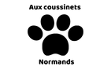

Notre refuge accueille les animaux abandonnés, blessés... dans le but de leur offrir un foyer pour le reste de leur vie. Tout à démarré lors de notre installation en Normandie, nous avons eu la visite d'un, puis deux puis une famille de chats. Nous avons souhaité agrandir notre famille de coussinets en accueillant des ânes, des alpagas, des cochons ou encore des poules dont la destinée était plutôt sombre. Aujourd'hui nous souhaitons sensibiliser les personnes sur l'abandon et la maltraitance animale, c'est pourquoi nous organisons régulièrement des visites au sein du refuge.